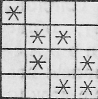

A table of $4\times4$ cells is given, in some cells of which a star is placed. Show that you can arrange seven stars so that when you remove any two rows and any two columns of this table, there will always be at least one star in the remaining cells. Prove that if there are fewer than seven stars, you can always remove two rows and two columns so that all the remaining cells are empty.
1. There is no star in any line $($for example, in the first line$)$, then by the Dirichlet principle there is a line $($let it be the second one$)$ in which there are no more than two stars. We remove from the table the third and fourth rows, and also the columns containing the stars. The resulting table does not contain any stars.
2. All the lines have stars. If there were two stars in three rows, the number of stars in the table would exceed 6. Consequently, there are two lines $($even the first and second$)$, each containing only one star. We cross out the third and fourth rows of the table and those columns in which the stars of the first and second rows are placed. The remaining table does not contain stars.
An example of the placement of seven stars: 